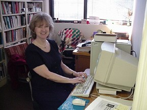

‚Üê Back to MarckBeggs.com | Arkansas Literary Forum archive, preserved as originally published‚Üê Back to MarckBeggs.com | Arkansas Literary Forum archive, preserved as originally published
‚Üê Back to MarckBeggs.com | Arkansas Literary Forum archive, preserved as originally published‚Üê Back to MarckBeggs.com | Arkansas Literary Forum archive, preserved as originally published|
 Lisa Sims-Brandom is a professor and chair of the English Department at John Brown University. Special research interests include writing articles on minority women writers and articles that correlate Christian themes with literature. Recent publications include articles in The Philological Review, Publications of the Arkansas Philological Society, Publications of the Mississippi Philological Association, Current Issues in Middle Level Education, Tennessee Middle School Journal, and various articles for the Arkansas Association of Colleges for Teacher Education and North Central Association. Chapter One of her memoir, The Skagway Connection, appeared in the January 2000 Alaskan publication entitled Undercurrent.
|